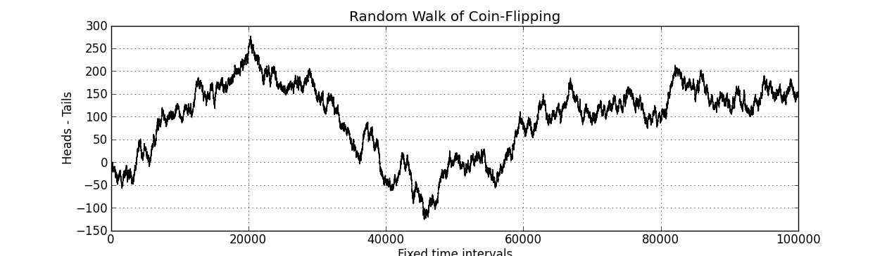

Time Series Revisted
This is a continuation of a tour of time series as it relates to forecasting. In PartOne we went on to studied stationarity with pretty plots and a random number generator. Given knowledge of stationarity we can derive a linear model of time series for forecasting.
Autoregressive Model
Partial Autocorrelation
Autoregressive-Moving Average
Autoregressive-Integrated-Moving Average
Akaike Information Criterion
Condition Numbers
Box Jenkins
import numpy as np
from matplotlib import pyplot as plt
-- JakeMick
Comments !